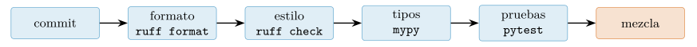
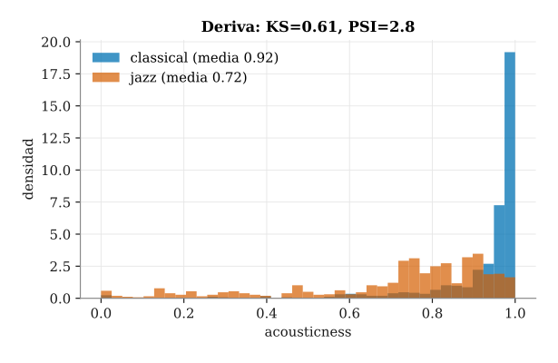

Capítulo 16. Reproducibilidad, ingeniería, despliegue y ética
▶ Ejecutar este capítulo en Binder
La primera vez que se abre, Binder construye el entorno en la nube (unos 10-20 min); verás una pantalla de progreso. Después queda en caché y abre en segundos. Si parece que no responde, espera a que termine de construirse o vuelve a intentarlo.
Hemos llegado al final. A lo largo del libro aprendimos a traer el dato y a limpiarlo, a explorarlo y a visualizarlo, a modelarlo con scikit-learn y PyTorch (caps. 13 y 14) y, en el capítulo anterior, a proteger a quien está detrás de cada fila (cap. 15). Sabemos, en suma, convertir preguntas en respuestas apoyadas en datos. Falta el paso que separa un análisis de un producto: convertir ese análisis en software del que alguien se responde.
Un cuaderno (notebook) que produce un buen número una tarde no es lo mismo que un sistema que produce el mismo número mañana, en otra máquina, ante un cambio en los datos, y del que además se responde legal y éticamente. Este capítulo trata de esa distancia: hacer el trabajo reproducible, probado, mantenible, desplegable y ético. Y lo hace con una ventaja poco común en un manual: el propio libro se ha construido con estas herramientas —git, uv, ruff, pytest, un entorno reproducible y latexmk—, de modo que no las describimos desde fuera, sino que las hemos usado para fabricar cada página que estás leyendo.
El capítulo tiene diez paradas y cierra la obra. Empezamos por la reproducibilidad (§16.1), la disciplina que sostiene todo lo demás; seguimos con el control de versiones con git (§16.2), las pruebas automatizadas (§16.3) y la validación de datos y la calidad de código (§16.4); damos luego el salto del cuaderno al producto —empaquetado, API y contenedor— (§16.5) y organizamos la estructura del proyecto y su seguimiento (§16.6). Después vigilaremos el modelo ya desplegado con la monitorización de la deriva (§16.7) y auditaremos su equidad (§16.8); recorreremos entonces un flujo completo de principio a fin (§16.9) y cerraremos con la comunicación responsable y un epílogo de todo el libro (§16.10).
Reproducibilidad: la disciplina del libro
En 2018 la revista Science advirtió de que la inteligencia artificial se enfrentaba a una crisis de reproducibilidad (Hutson 2018). El diagnóstico era incómodo: muchos resultados publicados no podían volver a obtenerse porque sus autores no compartían el código, no anotaban la semilla aleatoria (random seed) que había gobernado el azar del experimento, o no documentaban las versiones exactas de las bibliotecas que habían usado. No hablamos de fraude, sino de algo más silencioso y más extendido: la falta de disciplina. Un mismo autor, en una máquina distinta seis meses después, obtenía cifras diferentes y ya no sabía por qué. La comunidad reaccionó; en 2019, la conferencia NeurIPS puso en marcha un programa de reproducibilidad con una lista de comprobación (checklist) que obliga a declarar el código, los datos, las semillas y los hiperparámetros de cada artículo (Pineau et al. 2021).
Un resultado es reproducible cuando otra persona —o nosotros mismos dentro de un año— puede partir del mismo punto y llegar exactamente a las mismas cifras. Lograrlo no es cuestión de suerte: exige controlar cuatro cosas, cuatro pilares que conviene tener presentes durante todo el capítulo. El primero es fijar la semilla: todo generador pseudoaleatorio (el de Python, el de numpy, el de la biblioteca de aprendizaje) arranca de un valor inicial, y si no lo fijamos cada ejecución baraja de otra manera. El segundo es fijar las versiones en un fichero de bloqueo (lockfile) que registre no «pandas reciente», sino la versión precisa que se usó. El tercero es versionar el código, para saber qué líneas exactas produjeron qué número; a ello dedicamos toda la sección siguiente (§16.2). Y el cuarto es aislar el entorno, para que las bibliotecas del proyecto no se mezclen con las del sistema: un entorno virtual (venv), un entorno de conda o un contenedor (container).
Este libro no predica lo que no practica. Cada uno de sus módulos ejecutables —los src/capNN_*.py que hemos ido citando— comienza fijando las semillas \(42\) y \(2026\), de manera que sus cifras no dependen del humor del azar. Las versiones exactas viven en un lockfile: el clásico requirements-lock.txt o, en el flujo moderno que veremos enseguida, el uv.lock. El código no es un montón de cuadernos sueltos, sino un paquete instalable bajo src/, con su historia completa en git. Y el entorno es el mismo que montamos en el cap. 1 (envPCD), reproducible con una sola orden. Por eso cada figura y cada número que has leído en los capítulos anteriores no son afirmaciones que debas creer: son cifras que puedes regenerar. Esa es la disciplina del libro.
El coste de no tenerla es fácil de imaginar y difícil de olvidar cuando se ha sufrido. Seis meses después de publicar un análisis, un revisor pide el número exacto de una tabla; se abre el cuaderno, se ejecuta… y sale otro valor, porque entretanto una biblioteca subió de versión y cambió un comportamiento por defecto. O el compañero que se incorpora clona el repositorio, lo lanza y obtiene un error de importación tras otro, porque el entorno original vivía solo en el portátil de quien se marchó. O, peor, el modelo que funcionaba en el cuaderno da predicciones distintas en producción, y nadie sabe si es un fallo o el azar. En los tres casos el problema no es el código: es que el contexto que lo hacía correcto —versiones, semilla, datos— no se guardó. La irreproducibilidad no avisa; se cobra su precio justo cuando más cuesta pagarlo, y por eso los cuatro pilares no son burocracia académica, sino la diferencia entre un resultado que perdura y uno que caduca en silencio.
La herramienta moderna: uv
Durante años, montar un entorno reproducible obligaba a encadenar varias herramientas —pip para instalar, virtualenv para aislar, pip-tools o poetry para bloquear versiones—, cada una con sus manías. La generación actual las unifica. uv, de la empresa Astral y escrito en Rust, es un gestor de paquetes y proyectos que reemplaza a pip, virtualenv y poetry para muchos flujos de trabajo, y lo hace además a una velocidad que cambia la manera de trabajar (Astral, s. f.-b). Un proyecto de uv declara sus dependencias en un pyproject.toml legible por humanos y las congela en un uv.lock con las versiones exactas ya resueltas. Ese lockfile se versiona junto al código, y ahí está la clave: quien clone el repositorio no recibe una lista de deseos, sino la fotografía precisa del entorno que funcionó.
# reproduce EXACTAMENTE el entorno que fija el lockfile
uv sync
# ejecuta un script dentro de ese entorno aislado
uv run python src/cap16_ingenieria.py --cifras
# anade una dependencia y reescribe el lockfile
uv add panderaLa orden uv sync lee el uv.lock y reconstruye el entorno tal cual; uv run garantiza que el script se ejecuta dentro de él, sin depender de qué haya instalado por casualidad en la máquina. Que el lockfile viaje en el repositorio significa que un compañero, o un servidor de integración continua (CI) como los que veremos en §16.4, instala idénticas versiones y obtiene idénticos resultados.
Y aquí conviene subrayar un malentendido común: fijar la semilla no basta si no se fija también el entorno. La semilla hace determinista el azar, pero el resultado también depende del código que consume ese azar. Una versión distinta de una biblioteca puede cambiar un valor por omisión, el orden en que se suman unos números o el algoritmo interno de un modelo, y entonces el «mismo» código, con la «misma» semilla, devuelve otra cifra. Semilla y entorno son las dos mitades de una misma garantía; por eso el patrón que abre nuestros módulos y el lockfile que los acompaña son inseparables.
import random
import numpy as np
SEMILLA = 42
random.seed(SEMILLA)
np.random.seed(SEMILLA)
rng = np.random.default_rng(SEMILLA)
# misma semilla + mismo entorno -> misma secuenciaCerramos ligando la reproducibilidad con la honestidad que ha guiado toda la obra. La música que ha recorrido el libro desde el cap. 13 es un dataset real —el catálogo de Spotify (maharshipandya 2022)—, del que alojamos una copia congelada con su licencia para que las cifras no dependan de una descarga que mañana podría cambiar. Los perfiles de escucha del cap. 15, en cambio, son sintéticos, y por eso los declaramos Clase 2 en la política de datos del cap. 1: publicamos la semilla y el generador que los fabrican, precisamente para que cualquier lector pueda regenerarlos y cotejar cada número de cada figura contra el suyo propio. Reproducibilidad y transparencia son, en el fondo, la misma virtud: no pedimos que se nos crea, ofrecemos los medios para que se nos compruebe. Sobre esa base —un experimento que cualquiera puede rehacer— construiremos el resto del capítulo, empezando por la herramienta que guarda la memoria de cada cambio: el control de versiones.
Control de versiones con Git para proyectos de datos
Si la reproducibilidad de §16.1 es el objetivo, el control de versiones (version control) es la herramienta que lo vuelve alcanzable en el trabajo diario. git es hoy el estándar indiscutido: registra qué código produjo qué resultado, permite volver a cualquier estado anterior y hace posible que varias personas trabajen sobre el mismo proyecto sin pisarse (Blischak et al. 2016). En un análisis de datos no es un lujo ni una formalidad reservada al software «de verdad»: es la memoria del proyecto. Sin él, la pregunta «¿con qué versión del script obtuvimos aquella figura?» se queda sin respuesta; con él, cada resultado queda atado a un estado exacto del código. El propio libro que tienes en las manos se escribe así, con un commit por sesión de trabajo.
Lo esencial cabe en media docena de órdenes. git init crea el repositorio; git add selecciona los cambios que queremos guardar y git commit los sella con un mensaje; git branch y git switch abren y cambian de rama; git merge integra una línea de trabajo en otra, y git push envía el historial a un servidor remoto. Aprenderlas lleva una tarde. Lo que de verdad separa un repositorio útil de un vertedero de cambios no es el dominio de los comandos, sino la disciplina con que se usan, y esa disciplina se resume en tres hábitos. Primero, commits pequeños y con un propósito único, acompañados de un mensaje que explique el porqué del cambio y no solo el qué; un historial hecho de pasos legibles se puede leer, revisar y deshacer, mientras que un único commit gigante de «mil cosas» es opaco. Segundo, una rama por línea de trabajo —un capítulo, una corrección, un experimento— de modo que lo inacabado no contamine lo que ya funciona. Tercero, un historial que cuente la historia real del proyecto y sirva de bitácora (Wilson et al. 2017).
La regla propia de los datos: versionar el código, no los productos
Hay una regla que distingue un proyecto de datos del software convencional: aquí no se versiona todo. Los datos pesados y los artefactos generados —un dataset en Parquet, un modelo entrenado, un PDF compilado, las salidas de un notebook— no entran en el repositorio. Son voluminosos, cambian de forma binaria (git no sabe fusionar dos versiones de un Parquet) y, sobre todo, son reproducibles: se obtienen ejecutando el código. Lo que se versiona es precisamente ese código, el que los produce. El fichero .gitignore declara qué se queda fuera, y basta con unas pocas líneas para mantener el repositorio ligero y limpio.
Los datos crudos que sí necesitamos conservar —porque no se pueden regenerar— se gestionan aparte, con herramientas pensadas para ello: dvc (Data Version Control), git LFS (Large File Storage) o, en su forma más simple, un almacén externo con un identificador de versión. En los tres casos la idea es la misma: el binario vive fuera del repositorio y dentro solo queda un puntero ligero a su versión. Así se cierra el círculo con §16.1: versionar el código, fijar el entorno (el lockfile del cap. 1) y guardar un puntero a la versión exacta del dato son, juntos, la receta para reconstruir cualquier resultado meses después.
El flujo siguiente reproduce, simplificado, cómo se organiza el repositorio de este mismo libro. Nótese que solo entran al historial el código y la configuración; los datos y los PDF quedan excluidos por el .gitignore, y el trabajo de cada capítulo vive en su propia rama.
# inicializamos el repositorio del libro
git init
# .gitignore: fuera datos pesados y artefactos generados
cat > .gitignore <<'EOF'
data/*.parquet
latex/*.pdf
__pycache__/
EOF
# versionamos el codigo y la configuracion, no los productos
git add src/ pyproject.toml .gitignore
git commit -m "cap16: pipeline de ingenieria y pruebas"
# una rama por tarea: el capitulo 16
git switch -c cap16-ingenieriaPlataformas y revisión por pares
Un repositorio local ya aporta memoria y marcha atrás, pero el trabajo en equipo necesita un remoto compartido. Ahí entran plataformas como GitHub y GitLab: alojan el repositorio y, sobre esa base, añaden una capa de colaboración —incidencias, documentación y, por encima de todo, las pull requests o merge requests. Una petición de este tipo propone fusionar una rama en la principal y abre el cambio a la revisión por pares: otra persona lee el diff, comenta y aprueba antes de integrar. Esa revisión no es burocracia, sino parte de la ingeniería del dato: es el momento de detectar un error de lógica, una fuga de datos o un supuesto no documentado antes de que llegue a producción. Y no tiene por qué ser solo humana: como veremos en §16.4, cada petición puede disparar automáticamente —mediante la integración continua (CI)— las pruebas y el analizador de estilo (linter), de manera que ningún cambio se fusione si rompe algo. El control de versiones deja entonces de ser un simple archivador y se convierte en la columna vertebral de todo el flujo de calidad.
Pruebas automatizadas: pytest e hypothesis
El control de versiones guarda la memoria de lo que cambió; las pruebas comprueban que, tras el cambio, el código sigue haciendo lo que debe. Porque el código que manipula datos también se rompe, y con un agravante: suele hacerlo en silencio. Un programa que falla de golpe, con una excepción y una traza, al menos avisa. En cambio, una limpieza que deja de contemplar un caso, o una transformación que invierte un signo, no lanza ningún error: sigue produciendo números, solo que equivocados, y el desastre se descubre semanas después en una figura que no cuadra. En el cap. 10 dejamos pendiente, a propósito, «la batería de pruebas automatizadas para el cap. 16»; ha llegado el momento de montarla. Las pruebas automatizadas (testing) son la red que atrapa esos fallos silenciosos antes de que lleguen a un informe.
Pruebas por ejemplo con pytest
La herramienta estándar en Python es pytest (pytest Development Team, s. f.), y su idea básica es de una simplicidad desarmante: una prueba es una función cuyo nombre empieza por test_ y que afirma (assert) un resultado esperado. Si la afirmación se cumple, la prueba pasa en silencio; si no, pytest la marca como fallida y muestra exactamente qué valor se obtuvo frente al que se esperaba. No hay que registrar nada ni heredar de ninguna clase: basta escribir funciones y ejecutar pytest, que las descubre solo.
Probemos una función de referencia real de este capítulo, normalizar, que escala una secuencia de números al intervalo \([0,1]\). Su contrato tiene tres cláusulas, y cada una esconde un caso que conviene fijar: el caso normal —el mínimo va a \(0\) y el máximo a \(1\)—, el caso límite de una secuencia constante —en el que no se puede dividir por el rango, que vale cero, y devolvemos ceros— y el caso de error de una secuencia vacía, que no tiene sentido normalizar y debe avisar con una excepción.
from collections.abc import Sequence
def normalizar(valores: Sequence[float]) -> list[float]:
"""Escala a [0, 1]; si todos los valores son iguales, ceros."""
if not valores:
raise ValueError("no se puede normalizar una secuencia vacia")
lo, hi = min(valores), max(valores)
if hi == lo:
return [0.0 for _ in valores]
return [(v - lo) / (hi - lo) for v in valores]
def test_normalizar_rango() -> None:
assert normalizar([0, 5, 10]) == [0.0, 0.5, 1.0]
def test_normalizar_constante() -> None:
# caso limite: rango cero -> no dividir, devolver ceros
assert normalizar([7, 7, 7]) == [0.0, 0.0, 0.0]
def test_normalizar_vacia_avisa() -> None:
import pytest
with pytest.raises(ValueError):
normalizar([])Cada prueba cubre una cláusula del contrato. La primera comprueba el caso normal; la segunda ancla el caso límite de la constante, ese que es tan fácil de olvidar al escribir la función y tan fácil de romper al modificarla; la tercera exige que la secuencia vacía avise, y para ello usa pytest.raises, que invierte la lógica: la prueba pasa precisamente cuando dentro del bloque se lanza el ValueError esperado. Que un fallo sea obligatorio es tan importante como que lo sea un acierto. Ejecutar la batería es una sola orden:
# ejecuta las tres pruebas del modulo del capitulo
pytest src/cap16_ingenieria.py
# salida (resumida):
# src/cap16_ingenieria.py ... [100%]
# 3 passed in 0.40sTres puntos verdes, 3 passed, en torno a tres décimas de segundo: el contrato de normalizar se cumple. Y lo mejor es que esa comprobación es ahora permanente. Si dentro de seis meses alguien «optimiza» la función y por descuido rompe el caso constante, la segunda prueba fallará al instante y señalará el punto exacto, en lugar de dejar que el error se filtre a un análisis. Escribir la prueba una vez nos protege para siempre; es la traducción práctica de la revisión que pedíamos en §16.2, solo que hecha por la máquina.
Pruebas basadas en propiedades con hypothesis
Las tres pruebas anteriores comparten una limitación: solo comprueban los casos que se nos ocurrieron. Elegimos [0, 5, 10], [7, 7, 7] y la lista vacía porque nos parecieron representativos, pero ¿y los que no imaginamos? ¿Una lista con un único elemento, con números enormes, con negativos, con muchos valores repetidos salvo uno? Aquí entra un enfoque distinto: las pruebas basadas en propiedades (property-based testing). En vez de escribir casos concretos, declaramos una propiedad que debe cumplirse siempre y dejamos que la biblioteca genere por nosotros cientos de entradas —incluidas las raras— buscando un contraejemplo que la incumpla.
En Python esa biblioteca es hypothesis (MacIver et al. 2019), heredera de una idea que nació en el mundo de Haskell con la biblioteca QuickCheck. Para normalizar hay una propiedad universal evidente: sea cual sea la lista de entrada, toda salida cae en el intervalo \([0,1]\). El decorador @given describe la forma de las entradas —aquí, listas de números en coma flotante— y hypothesis se encarga de fabricarlas:
from hypothesis import given
from hypothesis import strategies as st
@given(st.lists(
st.floats(allow_nan=False, allow_infinity=False,
min_value=-1e6, max_value=1e6),
min_size=1))
def propiedad_en_rango(xs: list[float]) -> None:
# invariante: toda salida cae en [0, 1]
assert all(0.0 <= r <= 1.0 for r in normalizar(xs))
propiedad_en_rango() # hypothesis prueba cientos de entradasEl detalle de st.floats no es capricho: excluimos NaN e infinitos —con los que la propia noción de «rango» pierde sentido— y acotamos la magnitud para evitar problemas numéricos, mientras que min_size=1 descarta la lista vacía, cuyo contrato es distinto (debe fallar) y ya lo cubre la prueba por ejemplo. Con eso, hypothesis genera automáticamente listas de un elemento y de mil, con ceros, con negativos, con casi todos los valores iguales, y verifica el invariante en cada una. En nuestro módulo esta propiedad convive con las pruebas por ejemplo y se ejecuta con --cifras, que informa de que quedó «verificada con cientos de entradas generadas»; en una batería real bastaría con nombrarla test_... para que pytest la recogiera y disparara esos cientos de casos en cada ejecución.
Lo que convierte a hypothesis en algo más que un generador de números al azar es lo que hace cuando encuentra un fallo. Supongamos que, al reescribir normalizar, alguien olvidara el caso de la secuencia constante: al dividir por un rango que vale cero, la función devolvería NaN y el invariante se rompería. hypothesis no se limitaría a enseñar la primera lista disparatada que provocó el fallo —pongamos [813.4, 813.4, -2.0, 813.4]—, sino que la encogería (shrinking): reduce el contraejemplo a su forma mínima, la más simple y corta que sigue rompiendo la propiedad. Aquí acabaría entregándonos algo como [0.0, 0.0], la lista más corta de valores más sencillos que exhibe el error. Ese contraejemplo mínimo es un regalo para depurar, porque señala sin ruido la causa exacta —dos valores iguales— en lugar de obligarnos a bucear en una lista enorme de dígitos aleatorios.
Conviene ver por qué esto importa tanto en datos, con un caso que se repite en todos los equipos. Una función de limpieza convierte una columna de fechas y, de paso, descarta las filas con valor ausente. Meses después, alguien la «mejora» para que acepte un formato de fecha nuevo; el cambio es correcto para las fechas, pero por un descuido invierte la condición del filtrado y ahora descarta las filas válidas en vez de las vacías. El código no lanza ningún error: se ejecuta, produce una tabla más pequeña y el análisis sigue su curso con la mitad de los datos, dando cifras plausibles pero equivocadas. Un fallo así puede vivir meses sin que nadie lo note, porque no grita. Una única prueba —«sobre esta entrada conocida, la salida debe tener estas filas»— lo habría cazado en el primer segundo, antes de mezclarse con el trabajo de nadie. Esa es la asimetría que justifica el esfuerzo: escribir la prueba cuesta un minuto; descubrir semanas después que las conclusiones se apoyaban en un dato mutilado cuesta la credibilidad.
En el fondo, las pruebas son código que comprueba tu código. No demuestran que un programa sea correcto —eso sería mucho pedir—, pero levantan una barrera contra la regresión: cada vez que algo se rompe, alguien lo nota de inmediato. Y con datos, la distinción entre las dos familias que hemos visto marca una diferencia de fondo. Las pruebas por ejemplo comprueban «lo que se me ocurrió»; las pruebas por propiedad, «lo que podría fallar», incluidos los casos raros que nunca se nos habrían ocurrido. Un análisis serio necesita las dos. Nos queda un paso para cerrar el círculo: que estas comprobaciones no dependan de que alguien se acuerde de ejecutarlas. En la sección siguiente (§16.4) las ataremos, junto con la validación de los datos y el analizador de estilo, a la integración continua, que las dispara sola en cada cambio.
Validación de datos y calidad de código
La sección anterior puso una red de seguridad bajo el código: las pruebas de §16.3 verifican que normalizar hace lo que promete. Pero en un proyecto de datos hay un segundo frente, y a menudo el más traicionero: el dato. Ninguna prueba de una función garantiza que el Parquet que le daremos de comer mañana traiga valores de energy sensatos; un rasgo mal extraído, un cambio de formato en el catálogo o una unidad mal convertida producen tablas sintácticamente perfectas y semánticamente absurdas. Si las pruebas comprueban el código, necesitamos algo que compruebe el dato antes de que envenene todo lo que viene aguas abajo. Ese algo es un contrato de datos, y en 2026 la herramienta idiomática para escribirlo es pandera (Bantilan 2020).
Validación de datos con pandera
Ya conocimos pandera en el cap. 10, cuando prometimos que este capítulo automatizaría la limpieza; ha llegado el momento de cumplirlo. La idea es sencilla y disciplinada: un esquema declara qué es un dato válido —qué columnas existen, de qué tipo son y en qué rango se mueven— y rechaza sin contemplaciones lo que no cumple. El esquema de la música que usa src/cap16_ingenieria.py cabe en cuatro líneas:
import pandera.pandas as pa
esquema = pa.DataFrameSchema({
"danceability": pa.Column(float, pa.Check.in_range(0, 1)),
"energy": pa.Column(float, pa.Check.in_range(0, 1)),
"tempo": pa.Column(float, pa.Check.in_range(0, 250)),
"valence": pa.Column(float, pa.Check.in_range(0, 1)),
})
esquema.validate(musica) # la musica real cumple: dato valido
malo = musica.head(3).copy()
malo.loc[malo.index[0], "energy"] = -5.0
esquema.validate(malo) # un energy imposible: lo rechaza
# pandera.errors.SchemaError: Column 'energy' failed
# element-wise validator number 0: in_range(0, 1)
# failure cases: -5.0Cada Check.in_range codifica un hecho del mundo: la bailabilidad, la energía y la positividad (valence) viven entre 0 y 1, y el tempo entre 0 y 250 BPM. Contra la música real —el mismo dataset de siempre— esquema.validate pasa en silencio: el dato cumple el contrato. Contra una fila con un energy de \(-5{,}0\) —físicamente imposible— pandera lanza un SchemaError que nombra la columna, el check violado y el valor culpable. No corrige nada por sí mismo: señala, exactamente como una prueba que se pone en rojo.
Esa distinción —validar al entrar en lugar de depurar al final— es toda la diferencia entre un fallo ruidoso y uno silencioso. Un energy negativo que se cuela sin control no revienta el programa: se promedia con los demás, sesga un coeficiente, desplaza una predicción, y el error aflora tres capas más abajo disfrazado de resultado sorprendente. Colocar el esquema en la frontera —en cuanto el dato entra en el pipeline— convierte ese fallo diferido en un rechazo inmediato y localizado. Es la política de datos del libro llevada a código: el dataset de música del cap. 10 no solo se documenta, se verifica. (Cuando interesa ver todos los incumplimientos de una vez en lugar de parar en el primero, validate(df, lazy=True) los acumula y los informa juntos.)
Calidad de código: ruff y mypy
Si pandera vigila los datos, dos herramientas más —de coste casi nulo— vigilan el código, y ambas caben en el mismo pyproject.toml del cap. 1. La primera es ruff (Astral, s. f.-a), de Astral y escrita en Rust. Es a la vez analizador de estilo (linter) y formateador, y es tan rápido que reemplaza de un plumazo a toda una generación de utilidades —flake8, black, isort, pyupgrade— con dos verbos: ruff check detecta problemas (imports sin usar, variables muertas, malos olores) y ruff format da formato uniforme. Lo mejor es que podemos ejecutarlo sobre el propio código de este libro:
ruff format src/ # da formato: sangria, comillas
ruff check src/cap16_ingenieria.py
# All checks passed!
mypy src/ # verifica los tipos (ilustrativo)El libro pasa su propio analizador: el código que acabas de leer no es un ejemplo idealizado, sino un fichero real que respeta las mismas reglas que predica (línea de 80 caracteres, el conjunto E/F/I/UP/B/SIM declarado en el pyproject.toml). Esa honestidad es deliberada: un manual de buenas prácticas cuyo propio código no las cumpliera no merecería confianza.
La segunda herramienta es mypy (mypy contributors, s. f.), el verificador de tipos (type checker) estático de referencia. Aprovecha las anotaciones que introdujimos en el cap. 3 —en normalizar, una Sequence[float] que devuelve una list[float]— para cazar errores de tipo antes de ejecutar: sumar un texto a un número, pasar None donde se espera un flotante u olvidar una rama de un tipo unión. Conviene deshacer un malentendido frecuente: mypy no es de Microsoft; lo originó Jukka Lehtosalo y lo desarrolló en Dropbox, y es la implementación de referencia de la anotación de tipos de Python. La alternativa de Microsoft se llama pyright. En el entorno de este libro mypy no está instalado —por eso su invocación, mypy src/, aparece a título ilustrativo en el listado anterior, sin salida—, pero añadirlo no cuesta más que una línea en el grupo de desarrollo del pyproject.toml.
Las tres herramientas comparten una consecuencia estructural. Un proyecto serio deja de ser un montón de notebooks sueltos y adopta una forma: el paquete importable vive en src/, los scripts de ejecución van aparte, las pruebas se agrupan en tests/ y toda la configuración —dependencias, reglas de ruff, ajustes de mypy— reside en un único pyproject.toml. Es la estructura que montamos en el cap. 1, ahora con la calidad automatizada dentro.
La integración continua
Nada de lo anterior sirve si depende de que alguien se acuerde de ejecutarlo. El paso que cierra el círculo es la integración continua (CI): encadenar ruff format, ruff check, mypy y pytest en un solo guion que se dispara con cada cambio.
ruff format --check src/ # el formato es consistente
ruff check src/ # sin errores ni malos olores
mypy src/ # los tipos cuadran
pytest # las pruebas pasanColocado en un hook de pre-commit o en la CI del repositorio, este encadenado hace que el código nunca degrade: cada cambio se formatea, se comprueba, se tipa y se prueba de forma automática, y si cualquiera de los cuatro pasos falla, el cambio no se integra. La figura 16.1 resume el flujo. Es la misma disciplina que las pruebas, elevada a norma del proyecto: en lugar de confiar en la buena voluntad de cada persona, el propio repositorio se pone en rojo. Y si añadimos la validación de pandera como un paso más de la cadena, la red cubre a la vez el código y el dato: las dos cosas que un proyecto de datos puede romper.

Con el código probado y tipado y el dato validado, el proyecto está listo para dejar de ser un experimento y convertirse en algo que otros puedan usar. Cómo se da ese salto —de notebook a producto— es lo que veremos a continuación (§16.5).
De notebook a producto: automatización y despliegue
El análisis exploratorio vive en un notebook; el producto, no. Un notebook es un excelente cuaderno de laboratorio —celdas que se ejecutan en desorden, variables que sobreviven en la memoria del núcleo, salidas pegadas junto al código— y precisamente esas virtudes lo hacen un pésimo artefacto de producción: reproducible una tarde, frágil al mes siguiente. Convertir un hallazgo en algo que otras personas puedan usar sin nosotros al lado exige un camino en tres pasos, y los tres los hemos venido recorriendo a lo largo del libro casi sin nombrarlos.
El salto es tanto cultural como técnico. En la exploración, el error barato es el más productivo: se prueba, se descarta, se vuelve a intentar, y que una celda dependa de otra que se ejecutó hace media hora no importa porque solo hay una persona —uno mismo— en la sala. En producción, en cambio, el código lo ejecuta una máquina a las tres de la madrugada sin nadie mirando, sobre datos que nadie ha visto, y cada suposición implícita —«esta columna nunca viene vacía», «esto siempre corre en mi portátil»— se convierte tarde o temprano en un fallo a esa misma hora. La frase «funciona en mi máquina» es el epitafio de mil proyectos que nunca salieron del cuaderno. El trabajo de esta sección es, precisamente, eliminar esa frase del vocabulario: hacer que el modelo funcione en cualquier máquina, de forma predecible, sin su autor al lado.
Conviene además distinguir dos formas de servir un modelo, porque determinan toda la arquitectura. En el servicio en línea (online) el modelo responde a peticiones una a una y en el acto —¿de qué género es esta pista recién subida?—, y ahí importan la latencia y la disponibilidad; es el caso de la API que montaremos enseguida. En el servicio por lotes (batch) el modelo procesa de golpe un fichero entero cada noche —clasificar el catálogo completo que se subió hoy— y lo que importa es el volumen, no la rapidez de cada una. Muchos problemas que se plantean como «hay que montar una API en tiempo real» se resuelven mejor, y mucho más barato, con un proceso por lotes y una tabla de resultados; elegir el patrón correcto es una decisión de diseño anterior a la primera línea de código.
El primero es consolidar la lógica en funciones del paquete. Todo el código de esta obra vive en src/, no en las celdas: cada capítulo importa lo que necesita de un módulo con nombre, anotaciones de tipo y pruebas. Un notebook que hace from cap14_sklearn import pipeline_bosque es reproducible; uno que redefine esa función en una celda al vuelo, no. El segundo es orquestar los pasos: encadenar «datos, figuras, pruebas, PDF» de forma que un solo comando lo rehaga todo en orden. La herramienta más sencilla es un Makefile; para tuberías con dependencias finas existen flujos declarativos como snakemake o dvc repro, que solo recomputan lo que ha cambiado; y para lo verdaderamente grande —cientos de tareas con horarios y reintentos— un orquestador como Airflow o Dagster. Este mismo libro se construye así: un Makefile y un actualizar.sh regeneran las cifras, ejecutan pytest y ruff, y compilan el PDF con latexmk. La reproducibilidad del cap. 1 no como sermón, sino como práctica diaria. El tercero, cuando el resultado debe consumirse, es exponerlo: empaquetarlo, servirlo y, en la siguiente sección, vigilarlo.
Empaquetar y serializar el modelo
Un proyecto de datos serio se declara a sí mismo. El fichero pyproject.toml nombra el paquete, su versión y sus dependencias; con uv (Astral, s. f.-b) —o con pip— esas dependencias se instalan de forma reproducible, porque uv.lock clava la versión exacta de cada una, como vimos en el cap. 1. Cualquiera que clone el repositorio y ejecute uv sync obtiene, hasta el último parche, el entorno con el que se escribió este párrafo.
Falta congelar lo que el entorno produce: el modelo entrenado. El clasificador de género del cap. 14 —estandarización y estimador reunidos en un único objeto de scikit-learn— se serializa con joblib (joblib.dump) y se recupera intacto con joblib.load. Un único fichero encierra la cadena completa, de modo que quien lo cargue no necesita saber cómo se estandarizaron los diez rasgos de audio:
import joblib
import pandas as pd
from sklearn.ensemble import RandomForestClassifier
from sklearn.pipeline import make_pipeline
from sklearn.preprocessing import StandardScaler
from cap14_sklearn import FEATS10, PUNADO # 10 rasgos, 6 generos
df = pd.read_parquet("data/processed/musica.parquet")
sub = df[df["track_genre"].isin(PUNADO)]
modelo = make_pipeline(
StandardScaler(),
RandomForestClassifier(random_state=2026),
).fit(sub[FEATS10], sub["track_genre"])
# un solo fichero guarda el pipeline COMPLETO
joblib.dump(modelo, "models/genero.joblib")
cargado = joblib.load("models/genero.joblib")
print(type(cargado).__name__) # Pipeline
# las predicciones del recuperado son identicasEl objeto recuperado es de nuevo un Pipeline y predice exactamente lo mismo que el original: el modelo ya no depende del notebook que lo entrenó, sino que viaja en un fichero versionable junto al código y al uv.lock. Es la pieza que serviremos.
Servir el modelo: una API con FastAPI
Un modelo guardado no le sirve a nadie que no sepa Python. Para que una aplicación web, un panel o un móvil lo consulten, hay que exponerlo como un servicio: una API web que reciba una petición y devuelva una respuesta. La forma ligera de hacerlo en Python es FastAPI (Ramírez, s. f.), de Sebastián Ramírez, un marco construido sobre las anotaciones de tipo del cap. 3 —Pydantic para validar los datos de entrada, Starlette para el transporte— que a cambio de declarar los tipos ofrece validación automática y documentación OpenAPI sin escribir una línea de más. El siguiente listado carga el modelo al arrancar y publica un extremo /predecir; y, sin levantar ningún servidor, lo ejercita con el cliente de pruebas (TestClient) que FastAPI hereda de Starlette:
from fastapi import FastAPI
from fastapi.testclient import TestClient
import joblib
app = FastAPI()
modelo = joblib.load("models/genero.joblib") # cap. 14
@app.post("/predecir")
def predecir(acousticness: float) -> dict:
# el clasificador estima el genero por los diez
# rasgos; aqui, una regla sobre uno: mucha acustica
# apunta a una pista clasica
return {"es_clasica": bool(acousticness > 0.5)}
# EJECUTABLE sin abrir un puerto ni un navegador:
cliente = TestClient(app)
r = cliente.post("/predecir?acousticness=0.9")
print(r.status_code, r.json())
# 200 {'es_clasica': True}La respuesta —código 200 y el objeto {’es_clasica’: True}— es el clasificador de género llevado a servicio: la pregunta que persigue el modelado del libro, «¿de qué suena esta pista?», responde ahora por HTTP y en milisegundos. Que la prueba corra con TestClient no es un detalle: significa que el servicio se somete a la misma disciplina de pytest del §16.3, y que una regresión en el despliegue se detecta en la batería de pruebas, no en producción.
Hemos simplificado el último tramo por claridad. En un servicio completo, la petición traería los diez rasgos de audio —la energía, la acústica, el tempo, la bailabilidad…— y el extremo llamaría a cargado.predict(...) para que el pipeline del cap. 14 devolviera el género; aquí aplicamos una regla sobre un solo rasgo para que el ejemplo quepa en una página y se ejecute sin datos externos. Lo importante no cambia: entre el modelo y quien lo consulta media un contrato —qué entra, con qué tipos, qué sale— que FastAPI valida por nosotros y que conviene versionar igual que el código o el propio fichero genero.joblib.
Contenedores: el mismo entorno en cualquier máquina
Queda un cabo suelto. El servicio funciona en nuestra máquina, con nuestra versión de Python y nuestras dependencias; en el servidor de al lado puede fallar por un intérprete distinto o una biblioteca ausente. El contenedor (container) resuelve ese «en mi máquina funciona» empaquetando la aplicación con su entorno exacto —el intérprete, las dependencias del uv.lock, el modelo— en una imagen que corre igual en cualquier parte. La herramienta de referencia es Docker (Merkel 2014), y la receta de la imagen es un Dockerfile: la reproducibilidad del cap. 1 llevada hasta el despliegue. El siguiente listado es ilustrativo —docker no forma parte del entorno con el que se compila este libro, por eso lo citamos en vez de ejecutarlo—, pero muestra la estructura habitual:
# Dockerfile (ILUSTRATIVO: docker no se ejecuta aqui)
FROM python:3.11-slim
WORKDIR /app
COPY pyproject.toml uv.lock ./
RUN pip install uv && uv sync --frozen
COPY src/ ./src/
COPY models/ ./models/
# uvicorn sirve la app FastAPI del listado anterior
CMD ["uvicorn", "api:app", "--host", "0.0.0.0", "--port", "80"]Cada instrucción reconstruye una capa del entorno; uv sync --frozen garantiza que la imagen instala exactamente las versiones bloqueadas, ni una más nueva. El resultado cierra el ciclo que recorre esta sección: empaquetar el modelo (joblib), contenerlo con su entorno (Docker), servirlo como API (FastAPI) y —lo que veremos a continuación— monitorizarlo, porque un modelo desplegado no es un producto terminado sino uno que empieza a envejecer desde el primer día (§16.7).
Estructura de proyecto y seguimiento de experimentos
Entre montar el modelo (secciones anteriores) y desplegarlo hay un territorio que decide, más que ningún algoritmo, si un proyecto de datos sobrevive a su segundo mes: cómo está ORGANIZADO y cómo se recuerda lo que se ha probado. Son dos disciplinas humildes —estructura y registro— sin las cuales la reproducibilidad de la sección 16.1 es una intención y no un hecho.
Una estructura que se explica sola
Un proyecto de ciencia de datos maduro no es una carpeta con veinte notebooks numerados final, final_2, final_bueno. Es una estructura convencional que cualquiera reconoce de un vistazo, y que este mismo libro adopta:
src/—el paquete importable con la lógica reutilizable (funciones de carga, limpieza, modelado), como los móduloscapNNdel libro—;tests/—las pruebas de la sección 16.3—;data/—conraw/para el dato inmutable de origen yprocessed/para el derivado, nunca versionado en Git (sección 16.2)—;pyproject.toml—la configuración única: dependencias, y los ajustes deruff,mypyypytest—;y los notebooks, si los hay, relegados a exploración, nunca como fuente de verdad: la lógica que funciona MIGRA a
src/.
La convención importa porque elimina decisiones triviales y hace el proyecto legible para quien llega —incluido uno mismo dentro de seis meses—. Plantillas como Cookiecutter Data Science generan este esqueleto de un comando; lo esencial no es la herramienta, sino la separación entre el código que se prueba, el dato que no se versiona y la configuración que se declara una vez.
Recordar lo que se ha probado
Modelar es, en la práctica, probar decenas de combinaciones: este preprocesado, aquel hiperparámetro, esta semilla. Sin un registro sistemático, a la tercera tarde nadie recuerda qué configuración dio el mejor resultado ni con qué datos, y la promesa de reproducibilidad se rompe por el eslabón más humano: la memoria. El SEGUIMIENTO DE EXPERIMENTOS (experiment tracking) automatiza ese registro. Herramientas como MLflow —o Weights & Biases, o DVC— anotan, en cada ejecución, los PARÁMETROS, las MÉTRICAS y los ARTEFACTOS (el modelo serializado, las figuras), de modo que cada resultado quede atado a la configuración exacta que lo produjo.
import mlflow # ilustrativo (no instalado)
with mlflow.start_run():
mlflow.log_param("n_estimators", 300)
mlflow.log_param("semilla", 2026)
mlflow.log_metric("acierto_test", 0.72) # la cifra del cap. 14
mlflow.sklearn.log_model(pipe, "modelo")
# cada ejecucion queda registrada, comparable y reproducibleEl registro cumple dos funciones. La primera, COMPARAR: un panel muestra las ejecuciones lado a lado y responde «¿qué cambió entre la que daba \(0{,}72\) y la que daba \(0{,}69\)?» sin arqueología manual. La segunda, GOBERNAR el modelo que llega a producción: un REGISTRO DE MODELOS (model registry) guarda las versiones — «genero-v3, en producción; genero-v4, en pruebas»— con su linaje completo, de modo que siempre se sepa qué modelo está sirviendo, quién lo entrenó, con qué datos y qué métricas obtuvo. Es la trazabilidad de la sección 16.2 llevada del código al modelo.
Pipelines de datos reproducibles
Queda un último eslabón: que el CAMINO del dato crudo al resultado sea, él mismo, reproducible y automático. Un pipeline de datos declara los pasos —descargar, limpiar, transformar, entrenar— y sus dependencias, de forma que rehacer todo tras un cambio sea un solo comando. Herramientas como dvc repro, snakemake o un Makefile —el que orquesta este libro— guardan qué produce qué; si cambia el dato de origen o un parámetro, solo se recomputa lo que depende de ese cambio, no todo. Es la diferencia entre un análisis que se puede rehacer con un comando y otro que vive en la cabeza de quien lo escribió, y que se pierde cuando esa persona se marcha.
Este mismo libro es un ejemplo de esa idea llevada al extremo. Todo lo que el lector tiene entre manos —las cifras de cada tabla, las figuras vectoriales, el PDF y la versión web— se regenera con una sola orden que orquesta la cadena completa: ejecutar los src/capNN para producir los datos y las figuras, compilar el documento con latexmk resolviendo las referencias cruzadas y la bibliografía, y empaquetar las fuentes. Si se corrige una cifra en un módulo, basta relanzar esa orden para que el cambio se propague, coherente, hasta la última página; nadie tiene que recordar en qué orden hacer las cosas ni copiar números a mano de un sitio a otro. Un libro técnico es, al fin y al cabo, un producto de datos como cualquier otro: tiene fuentes, transformaciones y una salida que debe poder reconstruirse. Aplicarle la misma ingeniería que predica —control de versiones, entorno fijado, pipeline reproducible— no es una coquetería, sino la única forma honesta de escribirlo. Con la estructura, el registro y el pipeline en su sitio, la reproducibilidad deja de ser una virtud que se recuerda y pasa a ser una propiedad que se tiene.
Monitorización: la deriva de datos y de concepto
Poner un modelo en producción (§16.5) no es el final del trabajo, sino el comienzo de una nueva obligación. Un modelo desplegado no es un objeto estático: el mundo que describe sigue cambiando después de que lo entrenáramos, y esa evolución no le llega como un aviso, sino como una degradación silenciosa. La API responde igual que el primer día —devuelve su código 200 y su predicción—, las pruebas siguen en verde y el contenedor arranca sin errores; y sin embargo las respuestas son cada vez peores, porque los datos de hoy ya no se parecen a los de ayer. Este fenómeno enlaza directamente con el sobreajuste y la fuga de datos del cap. 13: un modelo excelente en el test de ayer puede ser malo con el dato de mañana, y la única manera de enterarse a tiempo es vigilarlo.
A ese cambio lo llamamos deriva (drift), y conviene distinguir dos formas (Gama et al. 2014). La deriva de datos (data drift o covariate shift) ocurre cuando cambia la distribución de las entradas, \(P(X)\), respecto a la del entrenamiento: llegan valores en rangos que el modelo apenas vio, o se alteran sus proporciones. La deriva de concepto (concept drift) es más profunda: cambia la propia relación entre las entradas y la salida, \(X\to y\), de modo que la regla que el modelo aprendió deja de ser cierta aunque las entradas parezcan las mismas. Un filtro de correo aprende qué es spam y los remitentes maliciosos cambian de táctica: eso es deriva de concepto. Llega un lote de un género nuevo, con rasgos de audio que el modelo apenas vio: eso es deriva de datos. Ambas degradan el modelo y ambas exigen lo mismo, darse cuenta.
Cómo detectarla: comparar dos distribuciones
Detectar la deriva de datos es, en esencia, un problema estadístico que ya conocemos: comparar dos distribuciones, la de referencia (los datos con los que entrenamos) y la de producción (los datos que llegan ahora). Si difieren más de lo esperable por azar, hay deriva. Dos métricas se han vuelto habituales. La primera es el test de Kolmogorov-Smirnov (KS): para una variable continua, mide la máxima diferencia entre las dos funciones de distribución acumulada (CDF); su estadístico va de \(0\) (idénticas) a \(1\) (disjuntas). La segunda es el PSI (Population Stability Index), muy usado en banca, que resume el desplazamiento en un único número: divide el rango en tramos y suma, tramo a tramo, cuánta masa de probabilidad se ha movido. Sus umbrales de referencia son cómodos de recordar: un PSI por debajo de \(0{,}1\) indica una población estable; entre \(0{,}1\) y \(0{,}25\), una deriva moderada que conviene vigilar; por encima de \(0{,}25\), una deriva significativa que pide actuar.
Una deriva que se puede ver: dos géneros por su acústica
La música nos ofrece un ejemplo de deriva tan nítido que se aprecia a simple vista y, además, honesto: la firma acústica de cada género. La acousticness de la música clásica no se parece a la del jazz —la clásica es casi toda acústica, el jazz mezcla más lo eléctrico—, de modo que si el clasificador se calibró con un lote de clásica y le llegara luego un lote de jazz, lo estaríamos alimentando con una distribución que apenas vio. Comparemos, con las dos herramientas anteriores, la acousticness de las pistas de classical (referencia) frente a las de jazz (lote nuevo).
import numpy as np
from scipy.stats import ks_2samp
def psi(ref, act, n_bins=10):
# PSI sobre deciles de la referencia (entrenamiento)
cortes = np.quantile(ref, np.linspace(0, 1, n_bins + 1))
cortes[0], cortes[-1] = -np.inf, np.inf
p_ref = np.histogram(ref, bins=cortes)[0] / len(ref)
p_act = np.histogram(act, bins=cortes)[0] / len(act)
eps = 1e-6 # evita log(0) en tramos vacios
p_ref = np.clip(p_ref, eps, None)
p_act = np.clip(p_act, eps, None)
return float(np.sum((p_act - p_ref) * np.log(p_act / p_ref)))
# referencia = classical; produccion = jazz (acousticness)
ks = ks_2samp(ref, nue)
print(f"media classical {ref.mean():.2f} jazz {nue.mean():.2f}")
print(f"KS = {ks.statistic:.3f} (p ~= 0)")
print(f"PSI = {psi(ref, nue):.2f}")
# media classical 0.92 jazz 0.72
# KS = 0.608 (p ~= 0)
# PSI = 2.78 -> deriva severa (umbral 0.25)El resultado no deja lugar a dudas. La media de la acousticness pasa de \(0{,}92\) en la clásica a \(0{,}72\) en el jazz; el test de Kolmogorov-Smirnov da un estadístico de \(0{,}608\) —las dos distribuciones difieren en buena parte de su recorrido— con un valor \(p\) prácticamente nulo, y el PSI se dispara hasta \(2{,}78\), más de diez veces el umbral de \(0{,}25\) a partir del cual hablamos de deriva significativa. La figura 16.2 lo muestra sin ambigüedad: la campana del jazz está corrida hacia la izquierda y apenas se solapa con la de la clásica.

acousticness en la música clásica frente al jazz: la distribución se desplaza de forma acusada (KS \(0{,}61\), PSI \(2{,}8\)). Un modelo calibrado solo con clásica vería en el jazz una población que apenas conoció. Datos: música (Spotify) [real]. Generada por src/cap16_ingenieria.py.La lección es doble. Primero, este caso es deriva de datos en estado puro: la firma acústica del género desplaza \(P(X)\) de forma dramática, y un modelo entrenado solo con clásica fallaría con el jazz no por un defecto de diseño, sino porque le pedimos que opine sobre un mundo que no le enseñamos. Segundo, la deriva no siempre es una sorpresa: aquí es perfectamente previsible, y esa previsibilidad es una oportunidad, pues nos dice que un buen clasificador de género debe entrenarse con todos los géneros, no con un puñado. La monitorización no sustituye al buen diseño; lo complementa, avisando cuando la realidad se aparta de lo que supusimos.
Qué hacer ante la deriva
Detectar la deriva es la mitad del trabajo; la otra mitad es responder, y la respuesta rara vez es entrar en pánico. Lo primero es alertar: que una métrica de deriva cruce su umbral debe generar un aviso, igual que lo haría un servidor caído, porque un modelo degradado es también una avería, solo que silenciosa. Lo segundo es diagnosticar: no toda deriva obliga a reaccionar —un cambio pequeño y previsible puede ser tolerable—, pero una deriva severa suele exigir reentrenar con datos recientes, que reflejen ya el mundo nuevo. Y lo tercero, cuando el modelo reentrenado sustituye al anterior, es versionarlo: guardar qué datos y qué código lo produjeron, con la misma disciplina de control de versiones de §16.2, para poder auditar el cambio y, si algo sale mal, volver atrás. Así se cierra el ciclo de vida completo de un sistema de datos: entrenar, desplegar, vigilar y reentrenar; una rueda que gira mientras el modelo esté vivo, no una línea recta que termina el día del despliegue.
Ética, sesgo y equidad
A lo largo del libro hemos perseguido el error. Ajustábamos hiperparámetros para bajar un MAE (cap. 13), comparábamos modelos por su AUC (cap. 14) y celebrábamos cada décima ganada en validación. Prometimos entonces que el capítulo final preguntaría por lo que ninguna de esas métricas captura. Ha llegado el momento, y la respuesta incomoda: un modelo con un error excelente puede ser, a la vez, injusto.
La razón es que un error agregado no dice cómo se reparte. Cuando el modelo decide sobre personas —un crédito, una contratación, un diagnóstico, la libertad condicional— sus aciertos y sus fallos no caen por igual sobre todos los grupos. Un clasificador puede tener el mismo AUC global y, sin embargo, equivocarse el doble con las mujeres que con los hombres, o negar sistemáticamente una oportunidad a quienes comparten un rasgo. Medir esa disparidad —y decidir qué hacer con ella— es el objeto de la equidad (fairness) algorítmica, y lo primero que descubriremos es que ni siquiera hay acuerdo sobre qué significa ser justo.
Tres definiciones que no coinciden
Para hablar con propiedad necesitamos definiciones formales. La literatura de la equidad (Dwork et al. 2012) ofrece varias, y la sorpresa es que no dicen lo mismo. Consideremos un clasificador binario que decide sobre personas divididas en grupos —por sexo, por origen— y fijémonos en tres nociones habituales.
La paridad demográfica (demographic parity) exige que la tasa de predicción positiva sea igual en todos los grupos: el modelo selecciona —concede el crédito, marca el diagnóstico— a la misma proporción de hombres que de mujeres, con independencia de la etiqueta real.
La igualdad de oportunidades (equal opportunity) (Hardt et al. 2016) se fija solo en quienes son positivos de verdad y pide igual tasa de verdaderos positivos —el recall del cap. 14— entre grupos: de los enfermos reales, el modelo detecta la misma fracción en cada grupo.
Las probabilidades igualadas (equalized odds) son más estrictas: igualan a la vez la tasa de verdaderos positivos y la de falsos positivos.
Los tres criterios son razonables, y sin embargo, salvo casos triviales, son incompatibles: un modelo no puede satisfacerlos todos a la vez. Elegir uno no es una decisión técnica sino de valores, y conviene tomarla a la luz de datos concretos. Auditemos los nuestros.
El teorema de imposibilidad
Lo que la auditoría muestra tiene nombre y demostración. El teorema de imposibilidad (Kleinberg et al. 2017; Chouldechova 2017) establece que, salvo en dos casos degenerados —que la prevalencia sea idéntica en todos los grupos, o que el modelo sea perfecto—, ningún clasificador puede a la vez estar calibrado por grupo (que una puntuación de riesgo signifique lo mismo en cada grupo) e igualar las tasas de error (los falsos positivos y los falsos negativos). Cuando las prevalencias difieren, como aquí, calibración y tasas de error iguales tiran en direcciones opuestas. No es que nos falte ingenio o mejores datos: es un resultado matemático, tan cierto como que no se puede maximizar y minimizar la misma cantidad. La equidad perfecta, entendida como cumplir todas las definiciones, no existe; queda la responsabilidad de elegir cuál importa en cada contexto y de decirlo con claridad.
El caso COMPAS
Este dilema abstracto tuvo un escenario real de consecuencias graves. En 2016, la investigación Machine Bias de ProPublica (Angwin et al. 2016) analizó COMPAS, un algoritmo comercial que puntuaba el riesgo de reincidencia de los acusados y alimentaba decisiones judiciales en Estados Unidos. ProPublica denunció que, entre quienes no reincidieron, la tasa de falsos positivos —ser etiquetado de alto riesgo sin llegar a reincidir— era mucho mayor para los acusados negros que para los blancos: aproximadamente un \(45\) % frente a un \(23\) %. La empresa que lo desarrolló, Northpointe, respondió que su sistema era justo por otra vara de medir: estaba calibrado por grupo, es decir, una misma puntuación de riesgo correspondía a la misma probabilidad real de reincidir con independencia de la raza.
Lo llamativo es que ambas partes tenían razón dentro de su métrica. Como la prevalencia de reincidencia difería entre los grupos, el teorema de imposibilidad garantizaba que no se pudieran cumplir a la vez la calibración que defendía Northpointe y la igualdad de tasas de error que exigía ProPublica. El debate, presentado a menudo como una acusación de mala fe, era en el fondo un teorema haciéndose visible. La lección para quien construye sistemas no es que la estadística lo resuelva, sino todo lo contrario: la estadística demuestra que hay que elegir, y esa elección —quién soporta qué tipo de error— es política y moral, no un tecnicismo que se pueda delegar en el modelo.
De dónde viene el sesgo
Conviene, por último, recordar de dónde entra el sesgo, porque rara vez lo pone el algoritmo de la nada. Entra, sobre todo, por los datos: un conjunto que refleja un mundo desigual le enseña al modelo esa desigualdad, y la reproduce con la autoridad aparente de lo automático. Entra también por las etiquetas —quién decidió, y con qué criterio, qué era un «buen» empleado o un «reincidente»— y por el propio objetivo que optimizamos, que puede ser un sustituto sesgado de lo que de verdad nos importa. El panorama de fuentes y mitigaciones está bien sistematizado (Mehrabi et al. 2021), y el tratamiento de referencia del campo (Barocas et al. 2023) insiste en que ninguna de estas grietas se tapa solo con más precisión.
Esto no es únicamente una cuestión de buenas intenciones: es obligación legal. El AI Act (European Parliament and Council of the European Union 2024) que presentamos en el cap. 15, en su artículo 10, exige para los sistemas de alto riesgo examinar los conjuntos de datos en busca de posibles sesgos y adoptar medidas para detectarlos, prevenirlos y mitigarlos. Auditar la equidad por subgrupos, como acabamos de hacer, deja de ser una recomendación ética para convertirse en un requisito exigible.
Conviene cerrar con una advertencia sobre el alcance de todo lo anterior. La equidad no es, en el fondo, un problema métrico: es un problema social que a veces se puede medir. Ninguna de las definiciones formales captura si el problema debía plantearse siquiera como una predicción, si la etiqueta que llamamos «verdad» no es ya el residuo de una injusticia previa, o si el uso que se dará al modelo agranda o reduce una desigualdad existente. Un clasificador de reincidencia perfectamente «equilibrado» en sus tasas sigue siendo un sistema que automatiza una decisión sobre la libertad de una persona; la pregunta de si debe existir no la responde ninguna métrica. Por eso el marco legal —el AI Act (European Parliament and Council of the European Union 2024) para los sistemas de alto riesgo— no se conforma con exigir datos de calidad y sin sesgos: impone también supervisión humana (human oversight), es decir, que una persona pueda entender, vigilar y, llegado el caso, revocar la decisión de la máquina. La lección final de este capítulo, y quizá del libro, es que la técnica sirve para hacer explícitas y cuantificables las preguntas incómodas, pero la responsabilidad de responderlas —de decidir qué se optimiza, para quién y a costa de qué— no se puede, ni se debe, delegar en un algoritmo. Es, irreductiblemente, humana.
Un flujo completo: el ciclo de vida de un modelo
Las secciones anteriores no son trucos sueltos: encajan en un mismo engranaje, el ciclo de vida de un modelo en producción. Recorrámoslo entero sobre el clasificador de premium del cap. 15, que ya conocemos, para ver cómo cada pieza del capítulo ocupa su lugar. No es un camino recto, sino un bucle: termina donde empieza.
1. Versionar (sección 16.2). El código del modelo vive en Git; el dato pesado, fuera del repositorio, con un puntero a su versión. Cualquier resultado —una predicción, una métrica— se puede rastrear hasta el commit y el dato que lo produjeron.
2. Probar y validar (secciones 16.3 y 16.4). Antes de entrenar nada, la integración continua ejecuta las pruebas del código con pytest y valida el dato de entrada con un esquema pandera: si llega un energy imposible o una columna cambia de tipo, el pipeline se detiene con un error claro en vez de propagar basura.
3. Entrenar y empaquetar (sección 16.5). Se ajusta el pipeline completo del cap. 14 —preprocesado más modelo— y se serializa con joblib en un artefacto único, versionado junto a la métrica que obtuvo.
4. Servir (sección 16.5). El artefacto se expone como un servicio FastAPI, empaquetado en un contenedor para que corra igual en cualquier máquina.
5. Vigilar (sección 16.7). En producción se monitoriza la deriva: si el PSI de una variable supera \(0{,}25\) —como la acústica entre géneros—, salta una alerta. El modelo no se abandona: se observa.
6. Auditar y mitigar (sección 16.8). La auditoría de equidad reveló una brecha: el modelo detectaba el premium de las mujeres mejor que el de los hombres (TPR \(0{,}438\) frente a \(0{,}431\)). Aquí la ingeniería se topa con una decisión de valores. Una técnica de post-procesado habitual es fijar un umbral distinto por grupo para igualar la tasa de aciertos:
objetivo = 0.43 # TPR comun a ambos grupos
def umbral(mask): # umbral del grupo para ese TPR
positivos = proba[mask][y_te[mask] == 1]
return np.quantile(positivos, 1 - objetivo)
t_M, t_F = umbral(sexo == "M"), umbral(sexo == "F")
pred = np.where(sexo == "M", proba >= t_M, proba >= t_F)
# umbral M=0.245 F=0.251 -> TPR M=0.430 F=0.430 (brecha casi nula)Funciona: la brecha de TPR cae de \(0{,}007\) a \(0{,}000\). Pero el remedio tiene un precio que conviene mirar de frente. Para igualar el trato hemos tenido que usar el sexo en la decisión —aplicar umbrales distintos según el grupo—, lo que en muchos contextos es en sí mismo una discriminación prohibida; y haber igualado la tasa de aciertos no iguala automáticamente las demás (la selección o los falsos positivos pueden seguir difiriendo). No hay un botón de «equidad»: hay un abanico de compromisos, y elegir uno —o decidir que el modelo no debe desplegarse— es una responsabilidad humana, no una llamada a una función.
7. Documentar (sección 16.10). Todo lo anterior —uso previsto, métricas globales y por subgrupo, la brecha y la decisión que se tomó con ella— se recoge en una ficha del modelo, para que quien lo use sepa qué compró.
8. Reentrenar. La deriva del paso 5 acabará degradando el modelo; cuando lo haga, se reentrena con datos recientes, se versiona el nuevo artefacto (paso 1) y el bucle vuelve a empezar. La tabla 16.1 resume el engranaje.
| Etapa | Herramienta | Sección |
|---|---|---|
| Versionar | Git, DVC | 16.2 |
| Probar y validar | pytest, hypothesis, pandera | 16.3, 16.4 |
| Entrenar/empaquetar | scikit-learn, joblib, uv | 16.5 |
| Servir | FastAPI, Docker | 16.5 |
| Vigilar | KS, PSI | 16.7 |
| Auditar y mitigar | métricas de equidad | 16.8 |
| Documentar | fichas de modelo | 16.10 |
Visto así, el modelo entrenado del cap. 14 era apenas el segundo paso de un camino de ocho, y el más corto. Lo que convierte un buen modelo en un buen sistema es todo lo que lo rodea: el control de versiones que lo hace rastreable, las pruebas que lo mantienen sano, el despliegue que lo pone a trabajar, la vigilancia que avisa cuando envejece, la auditoría que responde por sus decisiones y la documentación que lo hace comprensible. Esa es la ingeniería de la ciencia de datos, y es tan parte del oficio como el propio modelo.
Comunicación responsable y transparencia
Un resultado que no se comunica con honestidad no sirve; y a veces hace daño. Un modelo bien entrenado, validado y desplegado sigue siendo peligroso si la cifra que produce llega a quien decide despojada de sus condiciones: sin el intervalo que la rodea, sin la advertencia de que la correlación no es causa, sobre una gráfica que exagera. La ingeniería de las secciones anteriores sostiene el número; la comunicación responsable lo entrega sin traicionarlo. Es la última milla del oficio, y la más fácil de descuidar.
Cuatro exigencias la resumen. La primera es declarar la incertidumbre. Casi ningún resultado de este libro fue un punto: fue un punto con un margen. Cuando en el capítulo 11 estimamos la energía media de un género no dimos un número, dimos un intervalo de confianza; comunicar solo el centro y callar la anchura convierte una estimación prudente en una falsa certeza. La segunda es no confundir la correlación con la causa: que la energía y el volumen de una pista suban juntos no demuestra que uno cause el otro cuando el estilo del género los empuja a ambos. La tercera es elegir visualizaciones que no engañen: el capítulo 12 mostró cómo un eje truncado, una escala mal elegida o un color tendencioso pueden decir una mentira sin escribir un solo dato falso. La cuarta es documentar los límites de lo que se afirma: sobre qué población se entrenó el modelo, para qué se pensó y para qué no, y dónde deja de ser fiable.
Fichas de modelo y hojas de datos
Documentar esos límites dejó de ser un gesto de buena voluntad para convertirse en un artefacto con formato. Dos plantillas se han vuelto estándar de facto hacia 2026. Las fichas del modelo (model cards) (Mitchell et al. 2019) son un documento breve que acompaña a un modelo entrenado y responde a las preguntas que un usuario responsable haría antes de fiarse de él: cuál es su uso previsto —y cuáles los usos desaconsejados—, con qué datos se entrenó, qué rendimiento tiene —no solo globalmente, sino por subgrupo, exactamente la desagregación que produjo la auditoría de equidad de la §16.8— y qué limitaciones y sesgos conocidos arrastra. Las hojas de datos (datasheets for datasets) (Gebru et al. 2021) hacen lo propio con un dataset: documentan su motivación (¿para qué se creó y quién lo financió?), su composición (¿qué representa cada registro, qué falta?), el proceso de recogida y las condiciones de mantenimiento y distribución.
El lector atento reconocerá que este libro ya empezó a escribir esas fichas. Cuando declaramos los perfiles de escucha del cap. 15 como datos de Clase 2 —sintéticos, con estructura realista pero sin personas reales detrás— y documentamos la procedencia y la licencia del catálogo real de música, no cumplíamos un trámite: dejábamos por escrito la motivación y la composición de un dataset, que es justo lo que pide una hoja de datos. La tabla 16.2 lleva el ejercicio hasta el final con una ficha del modelo mínima para el clasificador de premium del capítulo 15, con las cifras verificadas de su auditoría.
| Campo | Contenido |
|---|---|
| Uso previsto | Estimar la proporción de suscriptores por grupos para análisis de mercado agregado. No apto para decisiones sobre una persona concreta. |
| Datos | perfiles_escucha: sintético, Clase 2; sin personas reales. |
| Umbral operativo | \(0{,}243\) (iguala la selección global a la tasa base \(\approx 0{,}12\)). |
| Métricas globales | Prevalencia real de premium: \(0{,}111\) (hombres), \(0{,}123\) (mujeres). |
| Métricas por subgrupo (sexo) | Hombres: selección \(0{,}112\), TPR \(0{,}431\), FPR \(0{,}073\). Mujeres: selección \(0{,}121\), TPR \(0{,}438\), FPR \(0{,}077\). |
| Limitaciones y sesgos | Las prevalencias distintas por sexo impiden igualar a la vez la paridad, la TPR y la FPR (teorema de imposibilidad). Al ser dato sintético, no debe extrapolarse a población real. |
La ficha no adorna el modelo: lo delata. Puesta en una sola página, la fila de métricas por sexo hace evidente —sin que nadie tenga que bucear en el código— que las mujeres reciben más selección y más aciertos porque su prevalencia real de premium es mayor, y que, por tanto, no se pueden igualar a la vez todas las nociones de equidad. Documentar no es maquillar; es dar a quien recibe el modelo lo que necesita para decidir si puede fiarse de él, y para qué.
Un cierre: del primer print al pipeline responsable
Este es el final del libro, y conviene mirar atrás sin solemnidad. Empezamos con un print y con el vocabulario incómodo del principiante: variables, tipos, el modelo de datos de Python (partes I y II). Sobre esa gramática montamos el cómputo vectorizado —NumPy y sus arrays— y el dato tabular a escala —pandas y polars—, que convirtieron bucles lentos en operaciones de una línea. Después vino el trabajo sucio y necesario: limpiar lo que llega roto, y la estadística para no engañarnos con lo que limpiamos. Visualizamos para ver y para contar; ajustamos modelos de aprendizaje automático y luego redes profundas; aprendimos a proteger a las personas cuyos datos usamos; y en este último capítulo hemos puesto, debajo de todo, la ingeniería que lo sostiene: entornos reproducibles, control de versiones, pruebas, validación, despliegue y monitorización.
La idea fuerza que recorre esas páginas es sencilla de enunciar y difícil de practicar: la ciencia de datos no es solo saber sacar un número. Es sacarlo de forma reproducible —que otro, o usted mismo dentro de un año, obtenga lo mismo—, probada —que no dependa de que ese día funcionara—, desplegable —que salga del notebook y sirva a alguien— y responsable —que no haga daño por el camino y que se pueda explicar—. El número fácil lo da cualquiera; el número del que uno responde es el oficio.
La música fue el hilo. El mismo catálogo de Spotify que abrió el libro como un dataset con el que aprender a leer un fichero terminó aquí auditado por deriva entre géneros, envuelto en pruebas y validado por esquema. No era el tema del libro: era la excusa, un caso honesto y cercano con el que ensayar cada técnica sobre datos reales y públicos sin implicar a nadie.
El campo cambiará —las herramientas de este 2026 envejecerán, algunas de las bibliotecas que aquí recomendamos serán reemplazadas—, pero lo que perdura son los principios: pensar con claridad, medir con honestidad, documentar lo que se hace y responder de ello. Con eso, cualquier herramienta nueva se aprende en una tarde.
Gracias por haber llegado hasta aquí. Ahora le toca a usted: coja sus datos —no los de este catálogo, los suyos— y hágalos hablar. Con cuidado.
Lecturas recomendadas
La ingeniería de un proyecto de datos toca a la vez la reproducibilidad, las buenas prácticas de software, la vigilancia del modelo y la ética, y ninguna de esas caras cabe entera en un capítulo. Las lecturas que siguen, agrupadas por frente, permiten ahondar en cada una; varias son las herramientas con las que se ha fabricado este mismo libro.
Reproducibilidad y pruebas. El diagnóstico de partida lo dio Hutson (2018) al describir en Science la crisis de reproducibilidad de la IA, y la respuesta de la comunidad quedó en la lista de comprobación de NeurIPS que documenta Pineau et al. (2021): léalos como el porqué de toda la disciplina de este capítulo. En lo práctico, la documentación de
pytest(pytest Development Team, s. f.) basta para escribir la primera batería de pruebas, yhypothesis(MacIver et al. 2019) —heredero delQuickCheckde Haskell— la eleva a pruebas basadas en propiedades que generan y encogen contraejemplos. Para el dato,pandera(Bantilan 2020) lleva esa misma idea de contrato a losDataFrame.Ingeniería y despliegue. Del ecosistema moderno de Astral conviene conocer
ruff(Astral, s. f.-a), analizador de estilo y formateador ultrarrápido, yuv(Astral, s. f.-b), gestor de paquetes y de entornos con lockfile versionable; su velocidad cambia el flujo diario. Para la robustez estática,mypy(mypy contributors, s. f.) es la implementación de referencia de las anotaciones de tipo del cap. 3. El salto a producto lo facilitanFastAPI(Ramírez, s. f.), que construye una API documentada a partir de esos mismos tipos, y los contenedores deDocker(Merkel 2014), que empaquetan la aplicación con su entorno. Como aviso permanente, Sculley et al. (2015) describe la deuda técnica oculta de los sistemas de aprendizaje automático (cap. 14): la mayor parte del código en producción no es el modelo.Monitorización de la deriva. Un modelo desplegado se degrada en silencio cuando el mundo cambia. La panorámica de Gama et al. (2014) distingue con claridad la deriva de datos de la deriva de concepto (concept drift) y sistematiza las familias de métodos para detectarlas y adaptarse; es la base teórica del seguimiento con \(KS\) y \(PSI\) que ensayamos en §16.7.
Equidad y ética. La discusión moderna arranca con la equidad por conocimiento (fairness through awareness) de Dwork et al. (2012) y con la igualdad de oportunidades de
- El resultado que vertebra el capítulo es el teorema de imposibilidad, demostrado de forma independiente por Kleinberg et al. (2017) y Chouldechova (2017): salvo casos degenerados, no se pueden igualar a la vez la calibración y las tasas de error cuando la prevalencia difiere entre grupos, la tensión que hizo célebre el caso COMPAS que destapó
- Para orientarse en el conjunto, el panorama de Mehrabi et al. (2021) inventaría fuentes de sesgo y definiciones, y el tratado de Barocas et al. (2023) —libre en línea— es la referencia de fondo.
Transparencia y gobernanza. Documentar es parte de la ingeniería. Las fichas de modelo de Mitchell et al. (2019) y las hojas de datos de Gebru et al. (2021) proponen acompañar cada modelo y cada dataset de un documento que declare su uso previsto, su rendimiento por subgrupo, sus limitaciones y sus sesgos. Y el marco que lo vuelve obligatorio para los sistemas de alto riesgo es el Reglamento de Inteligencia Artificial (European Parliament and Council of the European Union 2024), cuyo artículo 10 exige examinar los datos en busca de sesgos: el puente entre la ética de este capítulo y el derecho del anterior.